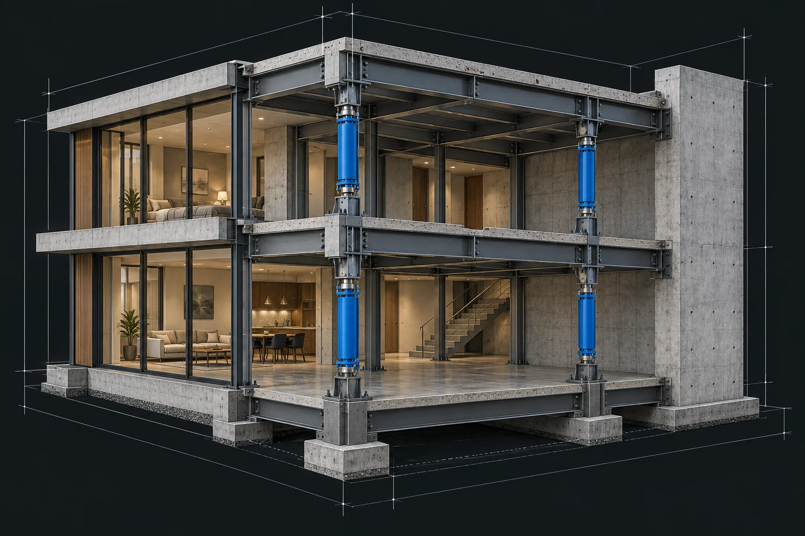

01
SEISMIC
ENGINEERING
STRUCTURAL
DESIGN
揺れに、
技術で答える。
見えないリスクに、確かな答えを。
AXISの耐震技術が、
もっと安心できる未来をつくる。
EARTHQUAKE
RESISTANCE
02PROBLEM
地震は、
いつもの暮らしを
一瞬で変えてしまう。
日本は、世界でも有数の地震大国。
だからこそ、私たちは「もしも」ではなく、
「いつか」に備えた建築をつくり続けています。
SEISMIC RISK
揺れを知る。
備えを、設計する。
- 地震への備え
- 解析 × 設計
- めざすのは
- 暮らしの継続
03TECHNOLOGY

- 01
ENERGY CONTROL
地震エネルギーの制御
- 02
HIGH RIGIDITY
高い構造剛性
- 03
LONG LIFE
長く使い続けられる構造
04DATA
性能を、
数字で証明する。
解析・実験・施工データに基づく、
地震への細やかなシミュレーション。
- 耐震等級
- 03 SEISMIC GRADE
- 最大変形量
- -42% 従来工法比 / 想定値
- 構造解析
- 1,240 CASES
- 累計施工
- 386 BUILDINGS
※ ポートフォリオ用の架空データです。実際の性能・施工実績を示すものではありません。
05STRUCTURE
見えない構造まで、
設計する。
3Dモデルによる構造解析で、
地震時の挙動をシミュレーション。
設計段階から、確かな安全性を追求します。
構造解析地震時の応力シミュレーション
接合部詳細力を確実に伝える接合設計
地震応答シミュレーション応答波形による検証
06PROJECTS
技術が支える、
その先の暮らし。
暮らしの器から、都市の基盤まで。
構造の可能性を、一つずつかたちに。
CONCEPT PROJECTS — 掲載する建築・実績はすべて架空のイメージです。
07ABOUT
PRECISION BUILDS TRUST.
構造から、
未来をつくる。
強さには、理由がある。
その理由を、私たちは設計する。
建物を支える、見えない構造。
私たちは研究・設計・施工をひとつにつなぎ、
技術とデータで、安心の根拠をつくります。
01 / RESEARCH研究02 / DESIGN設計03 / BUILD施工
08JOURNAL
安全を、
ひもとく。
構造と耐震の、その一歩先へ。
AXISの技術ノート。
09CONTACT
BUILD
FOR THE
UNKNOWN.
未知の揺れに、
備える。
これからの建築について、
構造から、一緒に考えませんか。